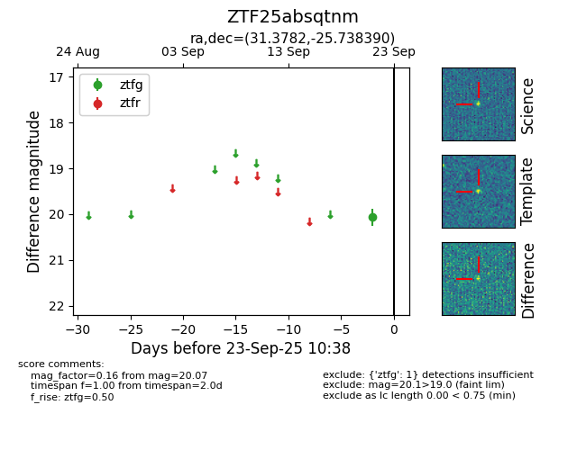

FINK: ZTF25absqtnm
Lasair: ZTF25absqtnm
ALeRCE: ZTF25absqtnm
ZTF25absqtnm (ztf,fink)
equatorial (ra, dec) = (31.3782,-25.73839)
galactic (l, b) = (212.3338,-73.37432)

last ztfg=20.07
1 ztfg detections